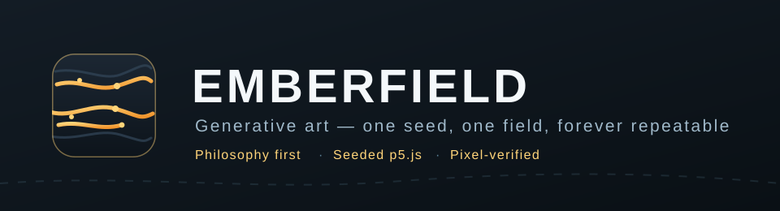

Overview
Generative art with p5.js: an algorithmic philosophy first, then its expression as seeded, reproducible code in an interactive viewer with parameter exploration.
What it does
- Art begins as a written algorithmic philosophy; every parameter must trace back to one of its principles.
- The seeding law makes every piece reproducible: the same seed renders the same pixels, verified headlessly.
- The viewer ships seed navigation, parameter sliders, colour pickers and PNG export in one self-contained file.
- A derivative of Anthropic's algorithmic-art under Apache-2.0, restyled and tested; provenance in NOTICE.md.
Try it
Four systems, one law: the seed decides everything. Same seed, same picture — switch systems, step seeds, or roll a random one.
Install
From this quarry, without a checkout:
shell
mkdir -p ~/.local/bin
curl -fsSL https://raw.githubusercontent.com/BEKO2210/SkillQuarry/main/cli/skillquarry.py -o ~/.local/bin/skillquarry
chmod +x ~/.local/bin/skillquarry
export PATH="$HOME/.local/bin:$PATH" # if it is not already
export SKILLQUARRY_REGISTRY=https://beko2210.github.io/SkillQuarry/api/v1/skills.json
skillquarry info emberfield
skillquarry install emberfield --prefix ~/.localInstallation verifies the checksum in the sidebar before running the skill's own
installer. skillquarry uninstall emberfield runs that skill's own
uninstaller and needs no checkout either.
From a checkout instead
shell
git clone https://github.com/BEKO2210/SkillQuarry.git
cd SkillQuarry/cli && ./install.sh
skillquarry install emberfieldQuickstart
shell
cd skills/ui-ux/emberfield && ./install.sh
# In Claude Code:
# "Create generative art of slow rivers of light" — the skill answers with
# a philosophy .md and a seeded .html artwork you can explore.
open examples/emberflow.html # the worked exampleIndependent verification
| passed — Port review (Claude Opus 5, on the maintainer's machine) Audited the upstream skill, rebuilt the viewer without upstream branding, pinned p5.js by SRI and SHA-256, and verified the seeding promise by rendering seed 12345 twice headlessly (identical hashes) and seed 512144 once (different hash). Derivative of anthropics/skills algorithmic-art (Apache-2.0). Changes and non-claims are recorded in NOTICE.md. · evidence |
Version history
| v1.0.0 |
|---|